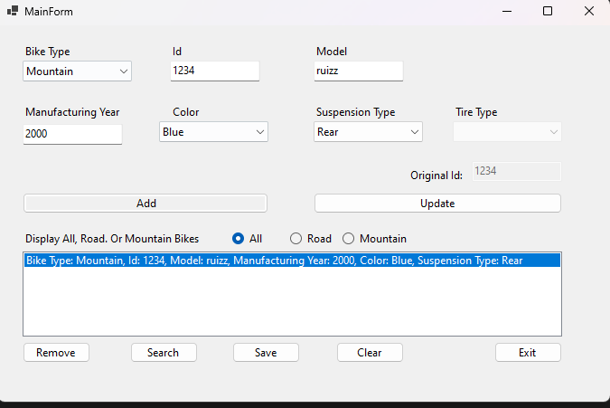
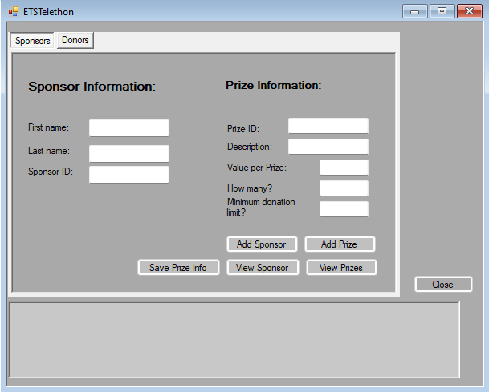
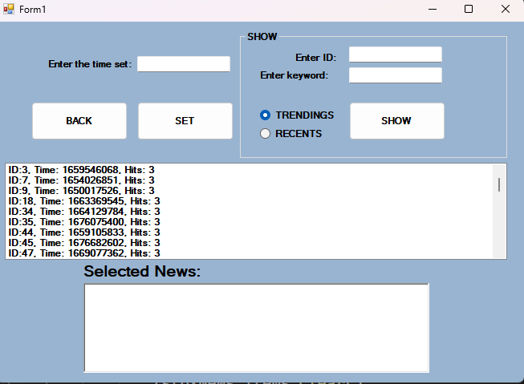

As a dedicated developer with a fervent passion for technology, I am driven by
the thrill of creating innovative solutions and a relentless commitment to continuous learning.
My journey is defined by a relentless pursuit of knowledge, ensuring that
I stay at the forefront of the ever-evolving tech landscape.
I am deeply passionate about leveraging cutting-edge tools and techniques to craft meaningful
digital experiences and solve complex challenges. With a genuine love for technology,
I am always eager to explore new horizons and contribute to the exciting advancements shaping our digital world.
In the course of this project, a multitude of HTML5, CSS3, and JavaScript principles have been adeptly
employed to deliver a highly favorable and user-friendly web experience. A significant emphasis has been
placed on the meticulous design of web pages to captivate and engage users effectively. Furthermore, this
website boasts remarkable responsiveness, seamlessly adapting to a diverse range of devices, including
computers, tablets, and smartphones. Its multifaceted structure encompasses multiple pages, with the
integration of APIs serving location-based functionalities, enhancing its overall utility.

This project encompasses the implementation of secure login and authentication mechanisms, ensuring the safe
entry of authorized users into the program. The primary focus of this software application is on a bike
manufacturing factory. Within this context, users are empowered to make selections from a range of
available bike types, including mountain and road bikes. Each bike variant is distinguished by its unique
capabilities and features, which have been meticulously integrated into the program's framework. Furthermore,
the project incorporates the functionality to create and maintain a comprehensive record of bikes, storing
this data in an XML file. Throughout the development of this project, object-oriented programming principles
played a pivotal role in shaping its structure and functionality.

This project encompasses the implementation of a comprehensive login authentication system. Within this
system, authorized users are granted access to enter the platform, where they can perform tasks such as
verifying the presence of donors and sponsors associated with a hospital. Furthermore, users are provided
with the capability to contribute their own information, which is subsequently integrated into the database.
Notably, this project features the creation of structured tables, including those for sponsors and donors.
Additionally, the program is meticulously engineered to manage errors and ensure seamless functionality.

In the scope of this project, the software application is designed to perform the task of reading JSON files.
It accomplishes this by employing sophisticated data structure methods to systematically extract pertinent
information from these JSON files. Subsequently, the program is able to present and showcase the content from
these files, with the display being contingent upon factors such as recency and trends. Furthermore, the
project incorporates the use of epoch time as a fundamental tool to facilitate these functionalities.